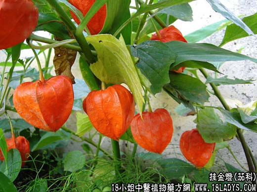

【中药概述】
挂金灯为茄科草本植物酸浆带宿萼的成熟果实。酸、苦，寒。归肺经。
1．清热解毒：用于咽喉肿痛、扁桃体炎，可与射干，牛蒡子，黄芩，桔梗，甘草等配伍；疔疮肿毒，肺热咳嗽，可与黄芩，桑白皮，知母，浙贝母等同用；百日咳，肺痈，牙龈肿痛。
2．利水消肿，外伤出血、吐血、衄血。
【药效鉴别】
锦灯笼清咽解毒之功比马勃、射干、山豆根为弱，但本品酸甘生津，对咽痛咽干津伤口渴者较为适用。
【临证应用】
锦灯笼15g，甘草6g，水煎服，治咽喉肿痛，肺热咳嗽等。
【药理作用】
酸浆煎剂对宋氏内氏痢疾杆菌、金黄色葡萄球菌有抑制作用。
【化学成分】
含生物碱、枸椽酸、草酸、维生素C及酸浆红素，全草含酸浆苦素，根含三种生物碱及酸浆根素。
【用量用法】
6——20g，水煎服，或入剂。